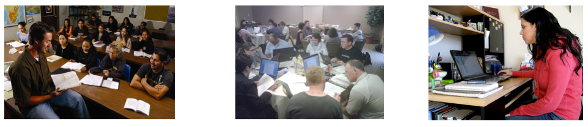
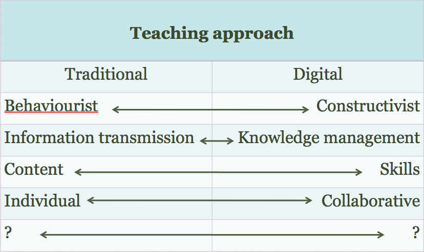
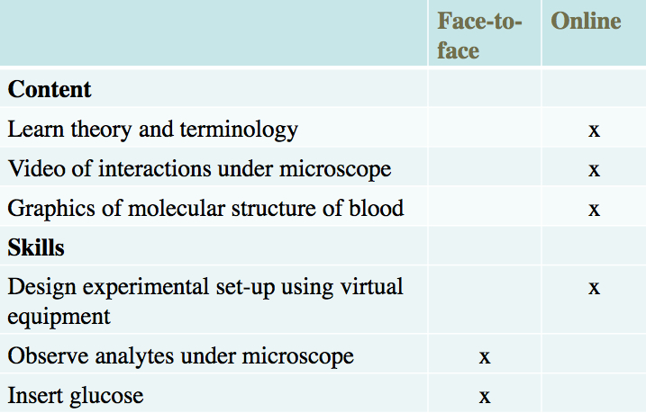
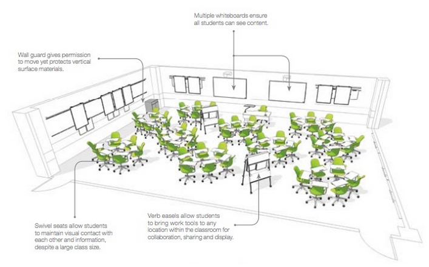

Chapter 9
Modes of delivery
Teaching in a Digital Age
Overview
What is covered in this chapter
- 9.1 The continuum of technology-based learning
- 9.2 Comparing delivery methods
- 9.3 Which mode? Student needs
- 9.4 Choosing between face-to-face and online teaching on campus
- 9.5 The future of the campus
Also in this chapter you will find the following activities:
- Activity 9.1 Where on the continuum are your courses?
- Activity 9.2 Defining the ‘magic of the campus’
- Activity 9.3 Knowing your students
- Activity 9.4 Deciding on the mode of delivery
- Activity 9.5 Redesigning your classroom space
In Chapters 6, 7 and 8, the use of media incorporated into a particular course or program was explored. In this chapter, the focus is on deciding whether a whole course or program should be offered partly or wholly online. In Chapter 10 the focus is on deciding when and how to adopt an approach that incorporates ‘open-ness’ in its design and delivery.
9.1.1 The many faces of online learning
Online learning, blended learning, flipped learning, hybrid learning, flexible learning, open learning and distance education are all terms that are often used inter-changeably, but there are significant differences in meaning. More importantly, these forms of education, once considered somewhat esoteric and out of the mainstream of conventional education, are increasingly taking on greater significance and in some cases becoming mainstream themselves. As teachers and instructors become more familiar and confident with online learning and new technologies, there will be more innovative methods developing all the time.
At the time of writing though it is possible to identify at least the following modes of delivery:
- classroom teaching with no technology at all (which is very rare these days);
- blended learning, which encompasses a wide variety of designs, including:
- technology-enhanced learning, or technology used as classroom aids; a typical example would be the use of Powerpoint slides and/or clickers;
- the use of a learning management system to support classroom teaching, for storing learning materials, set readings and perhaps online discussion;
- the use of lecture capture for flipped classrooms;
- one semester on a residential-type campus and two semesters online (the Royal Roads University model);
- a shortened time on campus spent on campus hands-on experience or training preceded or followed by a concentrated time spent studying online (an example is apprenticeship training for mature students at Vancouver Community College, or what the University of British Columbia calls the compressed classroom experience);
- hybrid or flexible learning requiring the redesign of teaching so that students can do the majority of their learning online, coming to campus only for very specific face-to-face teaching, such as lab or hands-on practical work, that cannot be done satisfactorily online (for examples, see below);
- fully online learning with no classroom or on-campus teaching, which is one form of distance education, including:
- courses for credit, which will usually cover the same content, skills and assessment as a campus-based version;
- non-credit courses offered only online, such as courses for continuing professional education;
- fully open courses, such as MOOCs;
- open educational resources, available for free downloading online, which either instructors or students can access to support teaching and learning.
There is an important development within blended learning that deserves special mention, and that is the total re-design of campus-based classes that takes greater advantage of the potential of technology, which I call hybrid learning, with online learning combined with focused small group face-to-face interactions or mixing online and physical lab experiences. In such designs, the amount of face-to-face contact time is usually reduced, for instance from three classes a week to one, to allow more time for students to study online.
In hybrid learning the whole learning experience is re-designed, with a transformation of teaching on campus built around the use of technology. For instance:
- Carol Twigg at the National Center for Academic Transformation has for many years worked with universities and colleges to redesign usually large lecture class programs to improve learning and reduce costs through the use of technology. This program has been running successfully since 1999;
- Virginia Tech many years ago created a successful program for first and second year math teaching built around 24 x 7 computer-assisted learning supported by ‘roving’ instructors and teaching assistants (Robinson and Moore, 2006);
- The University of British Columbia launched in 2013 what it calls a flexible learning initiative focused on developing, delivering, and evaluating learning experiences that promote effective and dramatic improvements in student achievement. Flexible learning enables pedagogical and logistical flexibility so that students have more choice in their learning opportunities, including when, where, and what they want to learn.
Thus ‘blended learning’ can mean minimal rethinking or redesign of classroom teaching, such as the use of classroom aids, or complete redesign as in flexibly designed courses, which aim to identify the unique pedagogical characteristics of face-to-face teaching, with online learning providing flexible access for the rest of the learning.
9.1.2 The continuum of online learning
Thus there is a continuum of technology-based learning:

(adapted from Bates and Poole, 2003)
9.1.3 Decisions, decisions!
These developments open up a whole new range of decisions for instructors. Every instructor now needs to decide:
- what kind of course or program should I be offering?
- what factors should influence this decision?
- what is the role of classroom teaching when students can now increasingly study most things online?
- if content is increasingly open and free, how does that affect my role as an instructor?
- when should I create my own material and when should I use open resources?
- should I open up my teaching to anyone, and if so, under what circumstances?
This chapter aims to help you answer these questions.
References
Bates, A. and Poole, G. (2003) Effective Teaching with Technology in Higher Education: Foundations for Success San Francisco: Jossey-Bass
Robinson, B. and Moore, A. (2006) Virginia Tech: the Math Emporium in Oblinger, D. (ed.) Learning Spaces Boulder CO: EDUCAUSE

Many surveys have found that a majority of faculty still believe that online learning or distance education is inevitably inferior in quality to classroom teaching (see for instance Jaschik and Letterman, 2014). In fact, there is no scientifically-based evidence to support this opinion. The evidence points in general to no significant differences, and if anything suggests that blended or hybrid learning has some advantages over face-to-face teaching in terms of learning performance (see, for example, Means et al., 2009).
9.2.1 The influence of distance education on online learning
We can learn a great deal from earlier developments in distance education. Although the technology is different, fully online learning is, after all, just another version of distance education.
Much has been written about distance education (see, for instance, Wedemeyer, 1981; Peters, 1983; Holmberg, 1989; Keegan, 1990; Moore and Kearsley, 1996; Peters, 2002; Bates, 2005; Evans et al., 2008) but in concept, the idea is quite simple: students study in their own time, at the place of their choice (home, work or learning centre), and without face-to-face contact with a teacher. However, students are ‘connected’, today usually through the Internet, with an instructor, adjunct faculty or tutor who provides learner support and student assessment.
Distance education has been around a very long time. It could be argued that in the Christian religion, St. Paul’s epistle to the Corinthians was an early form of distance education (53-57 AD). The first distance education degree was offered by correspondence by the University of London (UK) in 1858. Students were mailed a list of readings, and took the same examination as the regular on-campus students. If students could afford it, they hired a private tutor, but the Victorian novelist Charles Dickens called it the People’s University, because it provided access to higher education to students from less affluent backgrounds. The program still continues to this day, but is now called the University of London International Programmes, with more than 50,000 students worldwide.
In North America, historically many of the initial land-grant universities, such as Penn State University, the University of Wisconsin, and the University of New Mexico in the USA, and Memorial University, University of Saskatchewan and the University of British Columbia in Canada, had state- or province-wide responsibilities. As a result these institutions have a long history of offering distance education programs, mainly as continuing education for farmers, teachers, and health professionals scattered across the whole state or province. These programs have now been expanded to cover undergraduate and professional masters students. Australia is another country with an extensive history of both k-12 and post-secondary distance education.
Qualifications received from most of these universities carry the same recognition as degrees taken on campus. For instance, the University of British Columbia, which has been offering distance education programs since 1936, makes no distinction on student transcripts between courses taken at a distance and those taken on campus, as both kinds of students take the same examinations.
Another feature of distance education, pioneered by the British Open University in the 1970s, but later adopted and adapted by North American universities that offered distance programs, is a course design process, based on the ADDIE model, but specially adapted to serve students learning at a distance. This places a heavy emphasis on defined learning outcomes, production of high quality multimedia learning materials, planned student activities and engagement, and strong learner support, even at a distance. As a result, universities that offered distance education programs were well placed for the move into online learning in the 1990s. These universities have found that in general, students taking the online programs do almost as well as the on-campus students (course completion rates are usually within 5-10 per cent of the on-campus students – see Ontario, 2011), which is somewhat surprising as the distance students often have full-time jobs and families.
It is important to acknowledge the long and distinguished pedigree of distance education from internationally recognised, high quality institutions, because commercial diploma mills, especially in the USA, have given distance education an unjustified reputation of being of lower quality. As with all teaching, distance education can be done well or badly. However, where distance education has been professionally designed and delivered by high quality public institutions, it has proved to be very successful, meeting the needs of many working adults, students in remote areas who would otherwise be unable to access education on a full-time basis, or on-campus students wanting to fit in an extra course or with part-time jobs whose schedule clashes with their lecture schedule. However, universities, colleges and even schools have been able to do this only by meeting high quality design standards.
At the same time, there has also been a small but very influential number of campus-based teachers and instructors who quite independently of distance education have been developing best practices in online or computer-supported learning. These include Roxanne Hiltz and Murray Turoff who were experimenting with online or blended learning as early as the late 1970s at the New Jersey Institute of Technology, Marlene Scardamalia and Paul Bereiter at the Ontario Institute of Studies in Education, and Linda Harasim at Simon Fraser University, who all focused particularly on online collaborative learning and knowledge construction within a campus or school environment.
There is also plenty of evidence that teachers and instructors in many schools, colleges and universities new to online learning have not adopted these best practices, instead merely transferring lecture-based classroom practice to blended and online learning, often with poor or even disastrous results.
9.2.2 What the research tells us
There have been thousands of studies comparing face-to-face teaching to teaching with a wide range of different technologies, such as televised lectures, computer-based learning, and online learning, or comparing face-to-face teaching with distance education. With regard to online learning there have been several meta-studies. A meta-study combines the results of many ‘well-conducted scientific’ studies, usually studies that use the matched comparisons or quasi-experimental method (Means et al., 2011; Barnard et al., 2014). Nearly all such ‘well-conducted’ meta-studies find no or little significant difference in the teaching methods, in terms of the effect on student learning or performance. For instance, Means et al. (2011), in a major meta-analysis of research on blended and online learning for the U.S. Department of Education, reported:
In recent experimental and quasi-experimental studies contrasting blends of online and face-to-face instruction with conventional face-to-face classes, blended instruction has been more effective, providing a rationale for the effort required to design and implement blended approaches. When used by itself, online learning appears to be as effective as conventional classroom instruction, but not more so.
Means et al. attributed the slightly better performance of blended learning to students spending more time on task. This highlights a common finding, that where differences have been found, they are often attributed to factors other than the mode of delivery. Tamim et al. (2011) identified ‘well-conducted’ comparative studies covering 40 years of research. Tamim et al. found there is a slight tendency for students who study with technology to do better than students who study without technology. However, the measured difference was quite weak, and the authors state:
it is arguable that it is aspects of the goals of instruction, pedagogy, teacher effectiveness, subject matter, age level, fidelity of technology implementation, and possibly other factors that may represent more powerful influences on effect sizes than the nature of the technology intervention.’
Research into any kind of learning is not easy; there are just so many different variables or conditions that affect learning in any context. Indeed, it is the variables we should be examining, not just the technological delivery. In other words, we should asking a question first posed by Wilbur Schramm as long ago as 1977:
What kinds of learning can different media best facilitate, and under what conditions?
In terms of making decisions then about mode of delivery, we should be asking, not which is the best method overall, but:
What are the most appropriate conditions for using face-to-face, blended or fully online learning respectively?
Fortunately, there is much research and best practice that provides guidance on that question, at least with respect to blended and online learning (see, for instance, Anderson, 2008; Picciano et al., 2013; Halverson et al., 2013; Zawacki-Richter and Anderson, 2014). Ironically, we shall see that what we lack is good research on the unique potential of face-to-face teaching in a digital age when so much can also be done just as well online.
9.2.3 Challenging the supremacy of face-to-face teaching
Although there has been a great deal of mainly inconclusive research comparing online learning with face-to-face teaching in terms of student learning, there is very little evidence or even theory to guide decisions about what is best done online and what is best done face-to-face in a blended learning context, or about the circumstances or conditions when fully online learning is in fact a better option than classroom teaching. Generally the assumption appears to have been that face-to-face teaching is the default option by virtue of its superiority, and online learning is used only when circumstances prevent the use of face-to-face teaching, such as when students cannot get to the campus, or when classes are so large that interaction with students is at a minimum.
However, online learning has now become so prevalent and effective in so many contexts that it is time to ask:
what are the unique characteristics of face-to-face teaching that make it pedagogically different from online learning?
It is possible of course that there is nothing pedagogically unique about face-to-face teaching, but given the rhetoric around ‘the magic of the campus’ (Sarma, 2013) and the hugely expensive fees associated with elite campus-based teaching, or indeed the high cost of publicly funded campus-based education, it is about time that we had some evidence-based theory about what makes face-to-face teaching so special. This will be discussed further in Section 9.6
In the meantime, a method for determining which mode of delivery (face-to-face, blended or online) will be discussed in the next sections.
References
Anderson, A. (ed.) (2008) The Theory and Practice of Online Learning Athabasca AB: Athabasca University Press
Barnard, R. et al. (2014) Detecting bias in meta-analyses of distance education research: big pictures we can rely on Distance Education Vol. 35, No. 3
Bates, A.W. (2005) Technology, e-Learning and Distance Education London/New York: Routledge
Evans, T., Haughey, M. and Murphy, D. (2008) International Handbook of Distance Education Bingley UK: Emerald Publishing
Halverson, L. R., Graham, C. R., Spring, K. J., & Drysdale, J. S. (2012). ‘An analysis of high impact scholarship and publication trends in blended learning’ Distance Education, Vol. 33, No. 3
Holmberg, B. (1989) Theory and Practice of Distance Education New York: Routledge
Jaschik, S. and Letterman, D. (2014) The 2014 Inside Higher Ed Survey of Faculty Attitudes to Technology Washington DC: Inside Higher Ed
Keegan, D. (ed.) (1990) Theoretical Principles of Distance Education London/New York: Routledge
Means, B. et al. (2009) Evaluation of Evidence-Based Practices in Online Learning: A Meta-Analysis and Review of Online Learning Studies Washington, DC: US Department of Education
Moore, M. and Kearsley, G. (1996) Distance Education: A Systems View Belmont CA: Wadsworth
Ontario (2011) Fact Sheet Summary of Ontario eLearning Surveys of Publicly Assisted PSE Institutions Toronto: Ministry of Training, Colleges and Universities
Peters, O. (1983) Distance education and industrial production, in Sewart et al. (eds.) Distance Education: International Perspectives London: Croom Helm
Peters, O. (2002) Distance Education in Transition: New Trends and Challenges Oldenberg FGR: Biblothecks und Informationssystemder Carl von Ossietzky Universität Oldenberg
Picciano, A., Dziuban, C. and & Graham, C. (eds.), Blended Learning: Research Perspectives, Volume 2. New York: Routledge, 2013
Schramm, W. (1977) Big Media, Little Media Beverley Hills CA/London: Sage
Sarma, S. (2013) The Magic of the Campus Boston MA: LINC 2013 conference (recorded presentation)
Tamim, R. et al. (2011) ‘What Forty Years of Research Says About the Impact of Technology on Learning: A Second-Order Meta-Analysis and Validation Study’ Review of Educational Research, Vol. 81, No. 1
Wedemeyer, C. (1981) Learning at the Back Door: Reflections on Non-traditional Learning in the Lifespan Madison: University of Wisconsin Press
Zawacki-Richter, O. and Anderson, T. (eds.) (2014) Online Distance Education: Towards a Research Agenda Athabasca AB: AU Press, pp. 508
It will be suggested that when making choices about mode of delivery, teachers and instructors need to ask the following four questions:
- who are – or could be – my students?
- what is my preferred teaching approach?
- what are the content and skills that I need to teach?
- what resources will I have to support my decision?
As always, start with the learners.
9.3.1 Fully online/distance learners
Research (see for instance Dabbagh, 2007) has repeatedly shown that fully online courses suit some types of student better than others: older, more mature students; students with already high levels of education; part-time students who are working and/or with families. This applies not only to MOOCs (see Chapter 5) and other non-credit courses, but even more so to courses and programs for credit.
Today, ‘distance’ is more likely to be psychological or social, rather than geographical. For instance, from survey data regularly collected from students at the University of British Columbia:
- less than 20 per cent give reasons related to distance or travel for taking an online course;
- most of the 10,000 or so UBC students (there are over 60,000 students in total) taking at least one fully online course are not truly distant. The majority (over 80 per cent) live in the Greater Vancouver Metropolitan Area, within 90 minutes commute time to the university, and almost half within the relatively compact City of Vancouver. Comparatively few (less than 10 per cent) live outside the province (although this proportion is slowly growing each year);
- on the other hand, two thirds of UBC’s online students have paid work of one kind or another;
- many undergraduate students in their fourth year take an online course because the face-to-face classes are ‘capped’ because of their large size, or because they are short of the required number of credits to complete a degree. Taking a course online allows these students to complete their program without having to come back for another year;
- the main reason for most UBC students taking fully online courses is the flexibility they provide, given the work and family commitments of students and the difficulty caused by timetable conflicts for face-to-face classes.
This suggests that fully online courses are more suitable for more experienced students with a strong motivation to take such courses because of the impact they have on their quality of life. In general, online students need more self-discipline in studying and a greater motivation to study to succeed. This does not mean that other kinds of students cannot benefit from online learning, but extra effort needs to go into the design and support of such students online.
On the other hand, fully online courses really suit working professionals. In a digital age, the knowledge base is continually expanding, jobs change rapidly, and hence there is strong demand for on-going, continuing education, often in ‘niche’ areas of knowledge. Online learning is a convenient and effective way of providing such lifelong learning. Lifelong learners are often working with families and really appreciate the flexibility of studying fully online. They often already have higher education qualifications such as a first degree, and therefore have learned how to study successfully. They may be engineers looking for training in management, or professionals wanting to keep up to date in their professional area. They are often better motivated, because they can see a direct link between the new course of study and possible improvement in their career prospects. They are therefore ideal students for online courses (even though they may be older and less tech savvy than students coming out of high school). The most rapid area of growth in online courses is for masters programs aimed at working professionals. What is important for such learners is that the courses are technically well designed, in that learners do not need to be highly skilled in using computers to be able to study the courses.
So far, apart from MBAs and teacher education, public universities have been slow in recognising the importance of this market, which at worse could be self-financing, and at best could bring in much needed additional revenues. The private, for-profit universities, though, such as the University of Phoenix, Laureate University and Capella University in the USA have been quick to move into this market.
One other factor to consider is the impact of changing demographics. In jurisdictions where the school-age population is starting to decline, expanding into lifelong learning markets may be essential for maintaining student enrolments. Fully online learning may therefore turn out to be a way to keep some academic departments alive.
However, to make such lifelong learning online programs work, institutions need to make some important adjustments. In particular there must be incentives or rewards for faculty to move in this direction and there needs to be some strategic thinking about the best way to offer such programs. The University of British Columbia has developed a series of very successful, fully online, self-financing professional masters’ programs. Students can initially try one or two courses in the Graduate Certificate in Rehabilitation before applying to the master’s program. The certificate can be completed in less than two years while working full-time, and paying per course rather than for a whole Master’s year, providing the flexibility needed by lifelong learners. UBC also partnered with Tec de Monterrey in Mexico, with the same program being offered in English by UBC and in Spanish by Tec de Monterrey, as a means of kick-starting its very successful Master in Educational Technology program, which over time has doubled the number of graduate students in UBC’s Faculty of Education. We shall see these examples are important when we examine the development of modular programming in Section 9.9.
Online learning also offers the opportunity to offer programs where an institution has unique research expertise but insufficient local students to offer a full master’s program. By going fully online, perhaps in partnership with another university with similar expertise but in a different jurisdiction, it may be able to attract students from across the country or even internationally, enabling the research to be more widely disseminated and to build a cadre of professionals in newly emerging areas of knowledge – again an important goal in a digital age.
Often it is also assumed that isolated or remote learners are the main market for fully online learners in that they are distant from any local school, college or university. Certainly in Canada, there are such students and the ability to study locally rather than travel great distances can be very appealing. However, it is worth noting that the vast majority of online learners are urban, living within one hour’s travel of a college or university campus. It is the flexibility rather than the distance that matters to these learners, and really remote and isolated students may not have good study skills or broadband access. Thus they may need to be introduced gradually to online learning, with often strong local face-to-face support initially.
9.3.2 Blended learning learners
In terms of blended learning, the ‘market’ is less clearly defined than for fully online learning. The benefit for students is increased flexibility, but they will still need to be relatively local in order to attend the campus-based sessions. The main advantage is for the 50 per cent or more of students, at least in North America, who are working more than 15 hours a week to help with the cost of their education and to keep their student debt as low as possible. Also, blended learning provides an opportunity for the gradual development of independent learning skills, as long as this is an intentional teaching strategy.
The research also suggests that these skills of independent learning need to be developed while students are on campus. In other words, online learning, in the form of blended learning, should be deliberately introduced and gradually increased as students work through a program, so by the time they graduate, they have the skills to continue to learn independently – a critical skill for the digital age. If courses are to be offered fully online in the early years of a university career, then they will need to be exceptionally well designed with a considerable amount of online learner support – and hence are likely to be expensive to mount, if they are to be successful.
The main reason for moving to blended learning then is more likely to be academic, providing necessary hands-on experiences, offering an alternative to large lecture classes, and making student learning more active and accessible when studying online. This will benefit most students who can easily access a campus on a regular basis.
9.3.3 Face-to-face learners
Many students coming straight from high school will be looking for social, sporting and cultural opportunities that a campus-based education provides. Also students lacking self-confidence or experience in studying are likely to prefer face-to-face teaching, providing that they can access it in a relatively personal way.
However, the academic reasons for preference for face-to-face teaching by freshmen and women are less clear, particularly if students are faced with very large classes and relatively little contact with professors in the first year or so of their programs. In this respect, smaller, regional institutions, which generally have smaller classes and more face-to-face contact with instructors, have an advantage.
We shall see later in this chapter that blended and fully online learning offer the opportunity to re-think the whole campus experience so that better support is provided to on-campus learners in their early years in post-secondary education. More importantly, as more and more studying moves online, universities and colleges will be increasingly challenged to identify the unique pedagogical advantages of coming to campus, so that it will still be worthwhile for students to get on the bus to campus every morning.
9.3.4 Know your learners
It is therefore very important to know what kind of students you will be teaching. For some students, it will be better to enrol in a face-to-face class but be gradually introduced to online study within a familiar classroom environment. For other students, the only way they will take the course will be if it is available fully online. It is also possible to mix and match face-to-face and online learning for some students who want the campus experience, but also need a certain amount of flexibility in their studying. Going online may enable you to reach a wider market (critical for departments with low or declining enrolments) or to meet strong demand from working professionals. Who are (or could be) your students? What kind of course will work best for them?
We shall see that identifying the likely student market for a course or program is the strongest factor in deciding on mode of delivery.
Reference
Dabbagh, N. (2007) The online learner: characteristics and pedagogical implications Contemporary Issues in Technology and Teacher Education, Vol. 7, No.3
Analysing student demographics may help to decide whether or not a course or program should be either campus-based or fully online, but we need to consider more than just student demographics to make the decision about what to do online and what to do on campus for the majority of campus-based courses and programs that will increasingly have an online component.
9.4.1 A suggested method
I am going to draw on a method used initially at the U.K. Open University for designing distance education courses and programs in science in the 1970s. The challenge was to decide what was best done in print, on television, via home experiment kits, and finally in a one week residential hands-on summer school at a traditional university. Since then, Dietmar Kennepohl, of Athabasca University, has written an excellent book about teaching science online (Kennepohl, 2010). Also, the Colorado Community College System has recently been using a combination of remotely operated labs for student practical work, combined with home kits, for teaching online introductory science courses (Contact North, 2013; Schmidt and Shea, 2015). These all suggest a pragmatic method for making decisions about mode of delivery.
The most pragmatic way to go about this is to trust the knowledge and experience of subject experts who are willing to approach this question in an open-minded way, especially if they are willing to work with instructional designers or media producers on an equal footing. So here is a process for determining when to go online and when not to, on purely pedagogical grounds, for a course that is being designed from scratch in a blended delivery mode.
Image: CC Wikimedia Commons: National Cancer Institute, USA
I will choose a subject area at random: haematology (the study of blood), in which I am not an expert. But here’s what I would suggest if I was working with a subject specialist in this area:
Step 1: identify the main instructional approach.
This is discussed in some detail in Chapters 2 to 4, but here are the kinds of decision to be considered:

This should lead to a general plan or approach to teaching that identifies the teaching methods to be used in some detail. In the example of haematology, the instructor wants to take a more constructivist approach, with students developing a critical approach to the subject matter. In particular, she wants to relate the course specifically to certain issues, such as security in handling and storing blood, factors in blood contamination, and developing student skills in analysis and interpretation of blood samples.
Step 2. Identify the main content to be covered
Content covers facts, data, hypotheses, ideas, arguments, evidence, and description of things (for instance, showing or describing the parts of a piece of equipment and their relationship). What do they need to know in this course? In haematology, this will mean understanding the chemical composition of blood, what its functions are, how it circulates through the body, descriptions of the relevant parts of cell biology, what external factors may weaken its integrity or functionality, etc., the equipment used to analyse blood and how the equipment works, principles, theories and hypotheses about blood clotting, the relationship between blood tests and diseases or other illnesses, and so on.
In particular, what are the presentational requirements of the content in this course? Dynamic activities need to be explained, and representing key concepts in colour will almost certainly be valuable. Observations of blood samples under many degrees of magnitude will be essential, which will require the use of a microscope.
There are now many ways to represent content: text, graphics, audio, video and simulations. For instance, graphics, a short video clip, or photographs down a microscope can show examples of blood cells in different conditions. Increasingly this content is already available over the web for free educational use (for instance, see the American Society of Hematology’s video library). Creating such material from scratch is more expensive, but is becoming increasingly easy to do with high quality, low cost digital recording equipment. Using a carefully recorded video of an experiment will often provide a better view than students will get crowding around awkward lab equipment.
Step 3. Identify the main skills to be developed during the course
Skills describe how content will be applied and practiced. This might include analysis of the components of blood, such as the glucose and insulin levels, the use of equipment (where ability to use equipment safely and effectively is a desired learning outcome), diagnosis, interpreting results by making hypotheses about cause and effect based on theory and evidence, problem-solving, and report writing.
Developing skills online can be more of a challenge, particularly if it requires manipulation of equipment and a ‘feel’ for how equipment works, or similar skills that require tactile sense. (The same could be said of skills that require taste or smell). In our hematology example, some of the skills that need to be taught might include the ability to analyse analytes or particular components of blood, such as insulin or glucose, to interpret results, and to suggest treatment. The aim here would be to see if there are ways these skills can also be taught effectively online. This would mean identifying the skills needed, working out how to develop such skills (including opportunities for practice) online, and how to assess such skills online.
Let’s call Steps 2 and 3 the key learning objectives for the course.
Step 4: Analyse the most appropriate mode for each learning objective
Then create a table as in Figure 9.4.3

In this example, the instructor is keen to move as much as possible online, so she can spend as much time as possible with students, dealing with laboratory work and answering questions about theory and practice. She was able to find some excellent online videos of several of the key interactions between blood and other factors, and she was also able to find some suitable graphics and simple animations of the molecular structure of blood which she could adapt, as well as creating with the help of a graphics designer her own graphics. Indeed, she found she had to create relatively little new material or content herself.
The instructional designer also found some software that enabled students to design their own laboratory set-up for certain elements of blood testing which involved combining virtual equipment, entering data values and running an experiment. However, there were still some skills that needed to be done hands-on in the laboratory, such as inserting glucose and using a ‘real’ microscope to analyse the chemical components of blood. However, the online material enabled the instructor to spend more time in the lab with students.
It can be seen in this example that most of the content can be delivered online, together with a critically important skill of designing an experiment, but some activities still need to be done ‘hands-on’. This might require one or more evening or weekend sessions in a lab for hands-on work, thus delivering most of the course online, or there may be so much hands-on work that the course may have to be a hybrid of 50 per cent hands-on lab work and 50 per cent online learning.
With the development of animations, simulations and online remote labs, where actual equipment can be remotely manipulated, it is becoming increasingly possible to move even traditional lab work online. At the same time, it is not always possible to find exactly what one needs online, although this will improve over time. In other subject areas such as humanities, social sciences, and business, it is much easier to move the teaching online.
This is a crude method of determining the balance between face-to-face teaching and online learning for a blended learning course, but it least it’s a start. It can be seen that these decisions have to be relatively intuitive, based on instructors’ knowledge of the subject area and their ability to think creatively about how to achieve learning outcomes online. However, we have enough experience now of teaching online to know that in most subject areas, a great deal of the skills and content needed to achieve quality learning outcomes can be taught online. It is no longer possible to argue that the default decision must always be to do the teaching in a face-to-face manner.
Thus every instructor now needs to ask the question: if I can move most of my teaching online, what are the unique benefits of the campus experience that I need to bring into my face-to-face teaching? Why do students have to be here in front of me, and when they are here, am I using the time to best advantage?
9.4.2 Analyse the resources available
There is one more consideration besides the type of learners, the overall teaching method, and making decisions based on pedagogical grounds, and that is to consider the resources available.
9.4.2.1 The time of the instructor
In particular, the key resource is the time of the teacher or instructor. Careful consideration is needed about how best to spend the limited time available to an instructor. It may be all very well to identify a series of videos as the best way to capture some of the procedures for blood testing, but if these videos do not already exist in a format that can be freely used, shooting video specially for this one course may not be justified, in terms of either the time the instructor would need to spend on video production, or the costs of making the videos with a professional crew.
Time to learn how to do online teaching is especially important. There is a steep learning curve and the first time will take much longer than subsequent online courses. The institution should offer some form of training or professional development for instructors thinking of moving online or into blended learning. Ideally instructors should get some release time (up to one semester from one class) in order to do the design and preparation for an online course, or a re-designed hybrid course. This however is not always possible, but one thing we do know. Instructor workload is a function of course design. Well designed online courses should require less rather than more work from an instructor.
9.4.2.2. Learning technology support staff.
If your institution has a service unit for faculty development and training, instructional designers and web designers for supporting teaching, use them. Such staff are often qualified in both educational sciences and computer technology. They have unique knowledge and skills that can make your life much easier when teaching online. (This will be discussed further in Chapter 11.)
The availability and skill level of learning technology support from the institution is a critical factor. Can you get the support of an instructional designer and media producers? If not, it is likely that much more will be done face-to-face than online, unless you are already very experienced in online learning.
9.4.2.3 Readily available technology
Most institutions now have a learning management system such as Blackboard or Moodle, or a lecture capture system for recording lessons. But increasingly, instructors will need access to media producers who can create videos, digital graphics, animations, simulations, web sites, and access to blog and wiki software. Without access to such technology support, instructors are more likely to fall back on tried and true classroom teaching.
9.4.2.4 Colleagues experienced in blended and online learning
It really helps if there are experienced colleagues in the department who understand the subject discipline and have done some online teaching. They will perhaps even have some materials already developed, such as graphics, that they will be willing to share.
9.4.2.5 Money
Are there resources available to buy you out for one semester to spend time on course design? Many institutions have development funds for innovative teaching and learning, and there may be external grants for creating new open educational resources, for instance. This will increase the practicality and hence the likelihood of more of the teaching moving online.
We shall see that as more and more learning material becomes available as open educational resources, teachers and instructors will be freed up from mainly content presentation to focusing on more interaction with students, both online and face to face. However, although open educational resources are becoming increasingly available, they may not exist in the topics required or they may not be of adequate quality in terms of either content or production standards (see Section 9.7 for more on OERs).
The extent to which these resources are available will help inform you on the extent to which you will be able to go online and meet quality standards. In particular, you should think twice about going online if none of the resources listed above is going to be available to you.
9.4.3 The case for multiple modes
Increasingly, it is becoming difficult to separate markets for particular courses or programs. Although the majority of students taking a first year university course are likely to be coming straight from high school, some will not. There may be a minority of students who left high school directly for work, or went to a two year college to get vocational training, but now find they need a degree. Especially in professional graduate programs, students may be a mix of those who have just completed their bachelor’s course and are still full-time students, and those that are already in the work-force but need the specialist qualification. There will be a mix of students in third and fourth year undergraduate courses, some of whom will be working over 15 hours a week, and others who are studying more or less full time. In theory, then, it may be possible to identify a particular market for mainly face-to-face, blended or fully online learning, but in practice most courses are likely to have a mix of students with different needs.
If, though, as seems likely, more and more courses will end up as blended learning, then it is worth thinking about how courses could be designed to serve multiple markets. For instance, if we take our haematology course, it could be offered to full-time third year undergraduate students studying biology, or it could also be offered either on its own or with other related courses as a certificate in blood management for nurses working in hospitals. It might also be useful for students studying medicine who have not taken this particular course as an undergraduate, or even for patients with conditions related to their blood levels, such as diabetes.
If for instance our instructor developed a course where students spent approximately 50 per cent of their time online and the rest on campus, it may eventually be possible to design this for other markets as well, with perhaps practical work for nurses being done in the hospital under supervision, or just the online part being offered as a short MOOC for patients. For some courses (perhaps not haematology), it may be possible to offer the course wholly online, in blended format or wholly face-to-face. This would allow the same course to reach several different markets.
9.4.4 Questions for consideration in choosing modes of delivery
In summary, here are some questions to consider, when designing a course from scratch:
1. What kind of learners are likely to take this course? What are their needs? Which mode(s) of delivery will be most appropriate to these kinds of learners? Could I reach more or different types of learners by choosing a particular mode of delivery?
2. What is my view of how learners can best learn on this course? What is my preferred method(s) of teaching to facilitate that kind of learning on this course?
3. What is the main content (facts, theory, data, processes) that needs to be covered on this course? How will I assess understanding of this content?
4. What are the main skills that learners will need to develop on this course? What are the ways in which they can develop/practice these skills? How will I assess these skills?
5. How can technology help with the presentation of content on this course?
6. How can technology help with the development of skills on this course?
7. When I list the content and skills to be taught, which of these could be taught:
- fully online
- partly online and partly face-to-face
- can only be taught face-to-face?
8. What resources do I have available for this course in terms of:
- professional help from instructional designers and media producers;
- possible sources of funding for release time and media production;
- good quality open educational resources.
9. What kind of classroom space will I need to teach the way I wish? Can I adapt existing spaces or will I need to press for major changes to be made before I can teach the way I want to?
10. In the light of the answers to all these questions, which mode of delivery makes most sense?
References
Contact North (2013) The Colorado Community College System Sudbury ON: Contact North
Kennepohl, D. (2010) Accessible Elements: Teaching Science Online and at a Distance Athabasca AB: Athabasca University Press
Schmidt, S. and Shea, P. (2015) NANSLO Web-based Labs: Real Equipment, Real Data, Real People! WCET Frontiers
Image: © Cambridge Advanced Studies Program, Cambridge University, U.K., 2015
As more and more teaching is moved online, even for campus-based students, it will become increasingly important to think about the function of face-to-face teaching and the use of space on campus.
9.5.1 Identifying the unique characteristics of face-to-face teaching in a digital world
Sanjay Sarma, Director of MIT’s Office of Digital Learning, made an attempt at MIT’s LINC 2013 conference to identify the difference between campus-based and online learning, and in particular MOOCs. He made the distinction between MOOCs as open courses available to anyone, reflecting the highest level of knowledge in particular subject areas, and the ‘magic’ of the on-campus experience, which he claimed is distinctly different from the online experience.
He argued that it is difficult to define or pin down the magic that takes place on-campus, but referred to
- ‘in-the-corridor’ conversations between faculty and staff;
- hands-on engineering with other students outside of lectures and scheduled labs;
- the informal learning that takes place between students in close proximity to one another.
There are a couple of other characteristics that Sarma hinted at but did not mention explicitly in his presentation:
- the very high standard of the students admitted to MIT, who ‘push’ each other to even higher standards;
- the importance of the social networks developed by students at MIT that provide opportunities later in life.
Easy and frequent access to laboratories is a serious contender for the uniqueness of campus-based learning, as this is difficult to provide online, although there is an increasing number of developments in remote labs and the use of simulations. Opportunities for dating and finding future spouses is another contender. Probably the most important though is access to social contacts that can further your career.
I leave it to you to judge whether these are unique features of face-to-face teaching, or whether the key advantages of a campus experience are more specific to expensive and highly selective elite institutions. For most teachers and instructors, though, more concrete and more general pedagogical advantages for face-to-face teaching need to be identified.
9.5.2 The law of equal substitution
In the meantime, we should start from the assumption that academically, most courses can be taught equally well online or face-to-face, what I call the law of equal substitution. This means that other factors, such as cost, convenience for teachers, social networking, the skills and knowledge of the instructor, the type of students, or the context of the campus, will be stronger determinants of whether to teach a course online or on campus than the academic demands of the subject matter. These are all perfectly justifiable reasons for privileging the campus experience.
At the same time, there are likely to be some critical areas where there is a strong academic rationale for students to learn in a face-to-face or hands-on context. In other words, we need to identify the exceptions to the law of equal substitution. These unique pedagogical characteristics of campus-based teaching need to be researched more carefully, or at least be more theory-based than at present, but currently there is no powerful or convincing method or rationale to identify what the uniqueness is of the campus experience in terms of learning outcomes. The assumption appears to be that the campus experience must be better, at least for some things, because this is the way we have always done things. We need to turn the question on its head: what are the academic or pedagogical justification for the campus, when students can learn most things online?
9.5.3 The impact of online learning on the campus experience
This question becomes particularly important when we examine how an increased move to blended or hybrid learning is going to impact on learning spaces. In some ways, this may turn out to be a ticking time bomb for schools, colleges and universities.
9.5.3.1 Rethinking the design of classrooms
As we move from lectures to more interactive learning, we will need to think about the spaces in which learning will take place, and how pedagogy, online learning and the design of learning spaces influence one another. To make it worthwhile for students to come to campus when they can do an increasing amount of their study online, the on-campus activities must be meaningful. If for instance we want students to come to campus for inter-personal communication and intense group work, will there be sufficiently flexible and well-equipped spaces for students to do this, remembering that they will want to combine their online work with their classroom activities?
In essence, new technology, hybrid learning and the desire to engage students and to develop the knowledge and skills needed in a digital age are leading some teachers and architects to rethink the classroom and the way it is used.

Steelcase, a leading American manufacturer of office and educational furniture, is not only conducting impressive research into learning environments, but is way ahead of many of our post-secondary institutions in thinking through the implications of online learning for classroom design. Their educational research website, and two of their reports: Active Learning Spaces and 360°: Rethinking Higher Education Spaces are documents that all post-secondary institutions and even k-12 planners should be looking at.
In Active Learning Spaces, Steelcase reports:
Formal learning spaces have remained the same for centuries: a rectangular box filled with rows of desks facing the instructor and writing board….As a result, today’s students and teachers suffer because these outmoded spaces inadequately support the integration of the three key elements of a successful learning environment: pedagogy, technology and space.
Change begins with pedagogy. Teachers and teaching methods are diverse and evolving. From one class to the next, sometimes during the same class period, classrooms need change. Thus, they should fluidly adapt to different teaching and learning preferences. Instructors should be supported to develop new teaching strategies that support these new needs.
Technology needs careful integration. Students today are digital natives, comfortable using technology to display, share and present information. Vertical surfaces to display content, multiple projection surfaces and whiteboards in various configurations are all important classroom considerations.
Space impacts learning. More than three-quarters of classes include class discussions and nearly 60 percent of all classes include small group learning, and those percentages are continuing to grow. Interactive pedagogies require learning spaces where everyone can see the content and can see and interact with others. Every seat can and should be the best seat in the room. As more schools adopt constructivist pedagogies, the “sage on the stage” is giving way to the “guide on the side.” These spaces need to support the pedagogies and technology in the room to allow instructors who move among teams to provide real-time feedback, assessment, direction and support students in peer-to-peer learning. Pedagogy, technology and space, when carefully considered and integrated, define the new active learning ecosystem.
With students now doing an increasing amount of their work online (and often outside the classroom), the classroom needs to take into account this fact. This means opportunities for accessing, working on, sharing and demonstrating knowledge both within and outside the classroom. Thus if the classroom is organized into ‘clusters’ of furniture and equipment to support small group work, these clusters will also require power so students can plug in their devices, wireless Internet access, and the ability to transmit work to shared screens around the room (in other words, a class Intranet). Students also need quiet places or breakout spaces where they can work individually as well as in groups.
Tawnya Means and Jason Meneely, from the University of Florida at Gainsborough, reported at the UBTech 2013 conference that several departments have redesigned their class space to enable both formal and informal active group learning. Small, mobile tables with ports for a range of mobile devices, and software that enables both instructor and student control over screen sharing and projection are used to support case-based, problem-based, project-based and collaborative learning. Another redesign was to convert an old kitchen and classroom into an open cafeteria-based group learning area, with a breakout area for individual study, thus allowing students seamlessly to combine socialising, group study and independent study within the same overall space. Meneely, quoting Winston Churchill, said: ‘We shape our buildings and then our buildings shape us.‘ Meneely claims that when faculty are presented with such use of space, they naturally adopt these more active learning approaches.
9.5.3.2 The impact of flipped classrooms and hybrid learning on classroom design
These classrooms designs assume that students are learning in relatively small classes. However, we are also seeing the redesign of large lecture classes using hybrid designs such as flipped classrooms. Indeed Mark Valenti (2013) of the Sextant Group (an audio-visual company) is reported as saying:
“we’re basically seeing the beginning of the end of the lecture hall.’
Nevertheless, given the current financial context, we should not assume that the classroom time for these redesigned large lectures classes will be spent in small groups in individual classrooms (there are probably not enough small classrooms to accommodate these classes which often have over a thousand students). Larger spaces that can be organized into smaller working groups, then easily reconvened into a large, single group, will be needed. What the space for these large classes certainly should not be is the raked rows of benches which now are now the norm in most large lecture theatres.
Steelcase is also doing research on appropriate spaces for faculty. For instance, if a university or department is planning a learning commons or common area for students, why not locate faculty offices in the same general area instead of in a separate building? Indeed, a case could be made for integrating faculty office space with more open teaching areas.
9.5.3.3 The impact on capital building plans
It is obvious why a company such as Steelcase is interested in these developments. There is a tremendous commercial opportunity for selling new and better forms of classroom furniture that meets these needs. However, that is the problem. Universities, colleges and especially schools simply do not have the money to move quickly towards new classroom designs, and even if they did, they should do some careful thinking first about:
- what kind of campus will be needed over the next 20 years, given the rapid moves to hybrid and online learning;
- how much they need to invest in physical infrastructure when students can do much of their studies online.
Nevertheless, there are several opportunities for at least setting priorities for innovation in classroom design:
- where new campuses or major buildings are being built or renewed;
- where large first and second year classes are being redesigned: maybe a prototype classroom design could be tried for one of these large lecture redesigns and tested; if successful the model could be added slowly to other large lecture classes;
- where a department or program is being redesigned to integrate online learning and classroom teaching in a major way; they would receive priority for funding a new classroom design;
- all major new purchases of classroom furniture to replace old or worn out equipment should first be subject to a review of classroom designs.
The important point here is that investment in new or adapted physical classroom space should be driven by decisions to change pedagogy/teaching methods. This will mean bringing together academics, IT support staff, instructional designers and staff from facilities, as well as architects and furniture suppliers. Second, I strongly agree with the statement that we shape our environments, and our environments shape us. Providing teachers and instructors with a flexible, well-designed learning environment is likely to encourage major changes in their teaching; stuffing them into rectangular boxes with rows of desks will do the opposite.
Perhaps most important of all, institutions need to start re-examining their future growth plans for buildings on campus. In particular:
- will we need additional classrooms and additional lecture theatre buildings if students will be spending up to half their time studying online or in flipped classes?
- do we have enough learning areas where large numbers of students can work in small groups and can then quickly reconvene?
- do we have the technical facilities that will allow students seamlessly to work and study both face-to-face and online, and to share and capture the work when working physically together on campus?
- would we be better investing in the re-design of existing space rather than building new learning spaces?
What is clear is that institutions now need to do some hard thinking about online learning, its likely impact on campus teaching, and above all what kind of campus experience we want students to have when they can do much of their studying online. It is this thinking that should shape our investment in buildings, desks and chairs.
9.5.4 Re-thinking the role of the campus
If we accept the principle of equal substitution for many academic purposes, then this brings us back to the student on the bus question. If students can learn most things equally well (and more conveniently) online, what can we offer them on campus that will make the bus journey worthwhile? This is the real challenge that online learning presents.
It is not just a question of what teaching activities need to be done in a face-to-face class or lab, but the whole cultural and social purpose of a school, college or university. Students in many of our large, urban universities have become commuters, coming in just for their lectures, maybe using the learning commons between lectures, getting a bite to eat, then heading home. As we have ‘massified’ our universities, the broader cultural aspects have been lost.
Online and hybrid learning provides a chance to re-think the role and purpose of the whole campus, as well as what we should be doing in classrooms when students have online learning available any time and anywhere. Of course we could just close up shop and move everything online (and save a great deal of money), but we should at least explore what would be lost before doing that.
Webinar on choosing modes of delivery
A recording of a webinar on this topic, including discussion and participants’ comments can be accessed here: https://contactnorth.webex.com/contactnorth/lsr.php?
The webinar was organised by Contact North|Contact Nord, Ontario, and took place on 23 November, 2015.
In this webinar I discuss with participants from around the world:
- the continuum of technology-based learning and its conceptual and practical usefulness;
- the key factors to consider when choosing appropriate modes of delivery;
- how to move to blended/hybrid learning;
- identifying the unique educational benefits of the campus compared to online learning.
Reference
Valenti, M. (2013), in Williams, L., ‘AV trends: hardware and software for sharing screens, University Business, June
Continue reading
Teaching in a Digital Age: Guidelines for designing teaching and learning by Dr. Tony Bates (CC BY-NC).
Photos: reproduced from the original open textbook (each figure is credited in its caption).
Design: HTML template based on work by HTML5 UP.